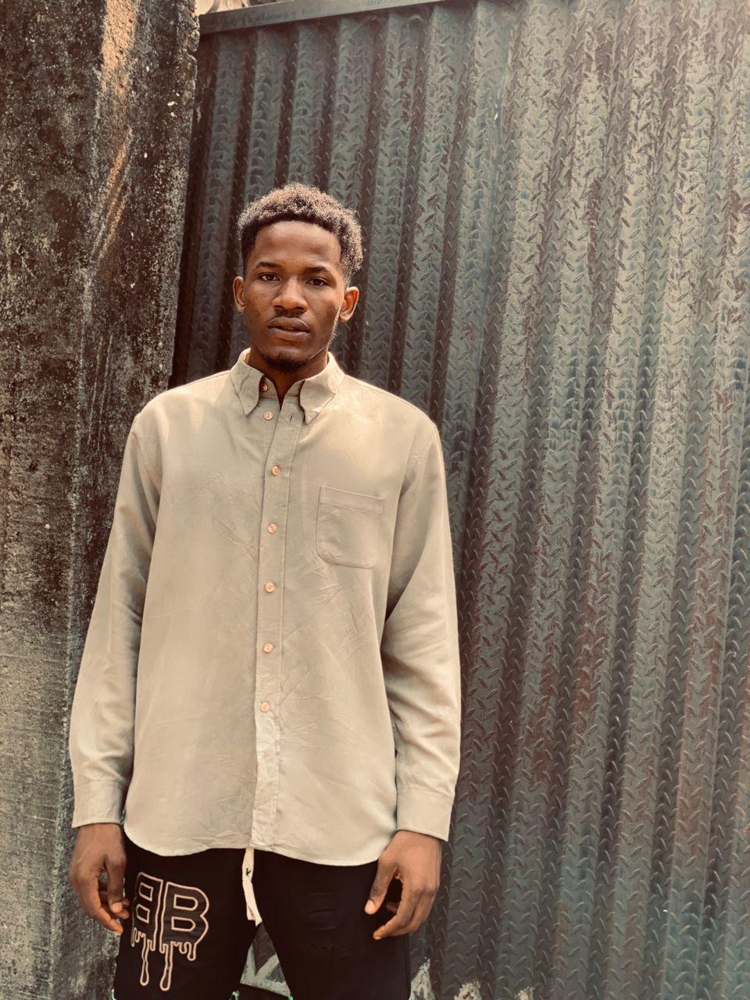

My Resume
Summary
Dynamic and ambitious, I am Frank Adimchinobi, a 21-year-old Mechatronics Engineering student
at the Federal University of Technology Owerri. My academic journey reflects a passion for
marrying mechanics and electronics, and I approach challenges with a blend of technical
expertise and creative problem-solving. Beyond my studies, I explore diverse interests,
from cutting-edge robotics to the artistry of photography, fostering a well-rounded
perspective that fuels my innovation and adaptability.
Education
- Federal University of Technology Owerri
- Bachelor of Engineering in Mechatronics Engineering
- Expected Graduation: 2025
Relevant Coursework:
- Control Systems
- Robotics and Automation
- Electronics and Instrumentation
- Mechanical Design
Work Experience
Innoson Auto Company, [Awka, Anambra], [2018] - [2020]
- Collaborated with a multidisciplinary team to design and implement robotic systems,
gaining hands-on experience in mechatronics applications.
- Assisted in troubleshooting and maintaining robotic equipment, ensuring optimal
functionality and minimizing downtime.
- Contributed to the development of innovative solutions, actively participating
in brainstorming sessions and design reviews.
Technical Assistant, Smeda Electronics Store, [Asaba, Delta], [2019] - [2019]
- Provided technical support to customers, diagnosing and resolving issues with electronic devices.
- Conducted product demonstrations and training sessions, enhancing customer understanding of complex technologies.
- Assisted in inventory management and product procurement, optimizing the store's technical offerings.
Skills
Technical Skills:
- Proficient in CAD software (SolidWorks, AutoCAD)
- Programming languages: C++, Python
- Control systems design and implementation
- Robotics and automation principles
Soft Skills:
- Creative problem-solving
- Strong analytical and critical thinking
- Effective communication and collaboration in interdisciplinary teams
- Adaptability to rapidly evolving technological landscapes
Additional Interests:
- Photography: Adept at capturing and editing visual narratives.
- Sustainable Living: Passionate about exploring eco-friendly technologies and practices.
Certifications and Achievements:
Certification in Robotics and Automation (2025):
- Completed an intensive certification program in Robotics and Automation, enhancing skills in
cutting-edge technologies.
Innovative Design Award, TechExpo Solutions (2025):
- Received recognition for a collaborative project showcasing a creative and efficient
mechatronics design at the University Engineering Expo.
Best Technical Presentation, NexGen Robotics Internship Program (2026):
- Awarded for delivering a comprehensive and engaging presentation on a complex mechatronics
project during the internship.
Profile Picture

My Hobbies
Contact